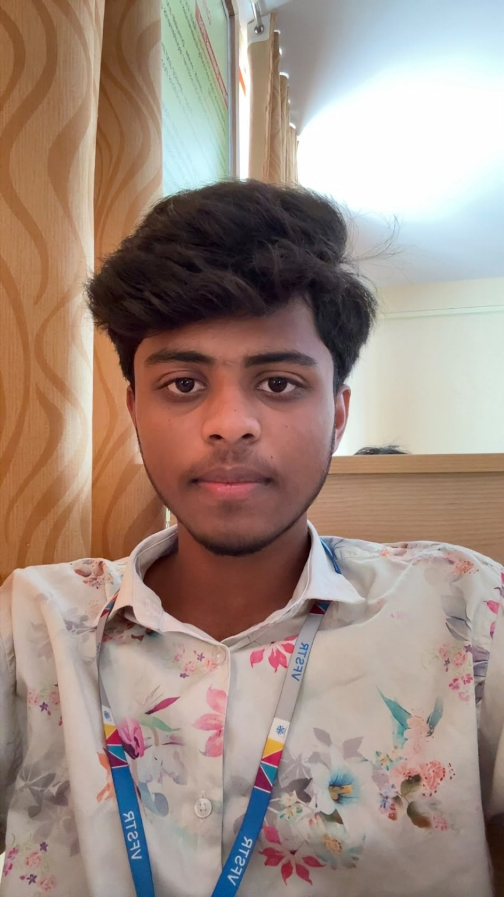

01
Student Portfolio Website
A responsive personal portfolio concept built with HTML, CSS, and JavaScript.
SAMPLE PROJECT IDEA — replace with actual work
I’m Mohammad Sohel, a student exploring software development, problem-solving, and how technology can make everyday life better.

I’m pursuing a Bachelor of Computer Applications at Vignan University. I enjoy learning programming fundamentals, experimenting with ideas, and growing through practice.
Outside academics, cricket keeps me energized and reminds me of teamwork, discipline, and consistency.
Vignan University
Building a strong foundation, one concept and one project at a time.
PROGRAMMING
PROGRAMMING
DEVELOPING
PERSONAL INTEREST
These are starter concepts, not claimed completed projects. Replace them with Sohel’s actual projects as they are built.
A responsive personal portfolio concept built with HTML, CSS, and JavaScript.
A beginner-friendly Java app concept for organizing student tasks and coursework.
A collection of foundational C exercises covering logic, loops, and functions.
Have an opportunity, a project idea, or just want to say hello?
✉ Sohel@gmail.com ↗